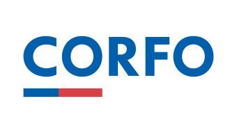
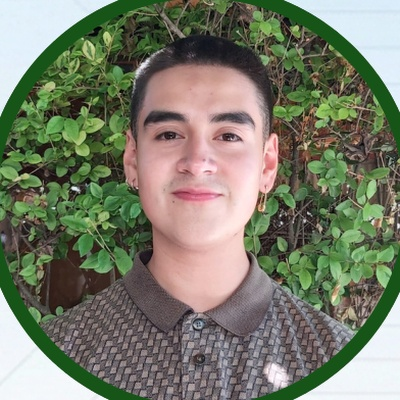
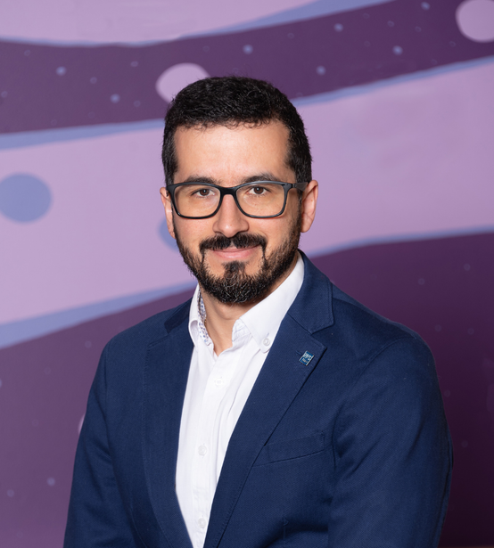

Ingeniería aeroespacial nacida en
la Universidad de Concepción.
Somos 5 ingenieros civiles aeroespaciales que creemos que los bosques, las comunidades y el territorio de Chile se pueden proteger mejor combinando autonomía aérea, visión térmica e inteligencia artificial soberana.
Tecnología aeroespacial explicada sin rodeos
La gran mayoría de los incendios forestales catastróficos en Chile comienzan de noche en quebradas y caminos aislados. Nosotros construimos los ojos y la inteligencia para anticiparlos.
Ojos en la oscuridad total
No usamos cámaras normales de luz de día. Llevamos sensores térmicos que captan la radiación calórica invisible: pueden detectar una fogata recién encendida o personas caminando en plena noche bajo las ramas de los árboles.
Cerebro local sin internet
En las quebradas del sur no hay señal de celular 4G ni 5G. Por eso la inteligencia artificial viaja físicamente a bordo del dron: clasifica en microsegundos si una fuente de calor es peligrosa sin mandar datos a ningún servidor externo.
Proteger la vida de las brigadas
Ningún brigadista ni guardia debería internarse a ciegas a una quebrada de noche arriesgando accidentes o emboscadas. El centinela aéreo verifica primero desde el cielo y entrega coordenadas exactas antes de mover personal.
Qué significa TRL 3 y cómo avanzamos
En ingeniería rigurosa no se promete disponibilidad comercial antes de tiempo. Te explicamos con total transparencia en qué fase estamos y cuáles son los compromisos reales asumidos.
¿Qué significa exactamente encontrarse en TRL 3?
La escala TRL (Technology Readiness Level) fue creada por la NASA y es el estándar internacional adoptado por CORFO para medir cuán lista está una tecnología, desde la idea teórica (TRL 1) hasta el despliegue industrial probado (TRL 9).
TRL 3 significa "Prueba de concepto experimental en laboratorio": Hemos validado los modelos matemáticos, los algoritmos de inferencia térmica en procesadores embebidos y la arquitectura de aviónica en bancos de prueba. No vendemos drones en cajas ni servicios de catálogo inmediato: estamos construyendo el prototipo para la primera demostración pública de vuelo en enero de 2027 (Demo Day Gearbox) y la campaña de validación en predio privado en junio de 2027.
Fundación de Strig Systems SpA
Conformación de la empresa en Concepción por 5 ingenieros civiles aeroespaciales egresados de la Universidad de Concepción con foco en autonomía y mitigación de incendios.
Adjudicación Semilla Inicia CORFO
Selección en el fondo público de CORFO para financiamiento no dilutivo de la prueba de concepto y validación técnico-comercial de Athene.
Aceleración en Gearbox UdeC & Banco de Aviónica
Desarrollo experimental en el Laboratorio Aeroespacial UdeC, afinamiento de modelos térmicos y entrevistas de validación con empresas forestales líderes.
Demo Day Gearbox — Vuelo Demostrativo
Vuelo de prueba de concepto y demostración de inferencia térmica en tiempo real ante el jurado internacional (Chris Klaus, Fusen World) e inversionistas.
Campaña de Validación en Terreno Forestal
Ensayos nocturnos en predio piloto privado forestal bajo régimen acotado de línea de vista (VLOS), midiendo tiempos de detección y reducción de falsas alarmas.
Respaldo institucional y base técnica
Contamos con el soporte de instituciones líderes en ciencia, ingeniería y fomento a la innovación profunda.

CORFO · Semilla Inicia
Adjudicatarios del fondo público de CORFO (Gobierno de Chile) destinado a emprendimientos innovadores de base científico-tecnológica de alto impacto para acelerar su validación técnica y comercial.

Lab Aeroespacial UdeC
Espacio de desarrollo y banco de pruebas dentro de la Facultad de Ingeniería de la Universidad de Concepción. Disponemos de capacidades de modelación aerodinámica, túnel de viento y simulación estructural.

Gearbox UdeC
Aceleradora tecnológica de la Facultad de Ingeniería UdeC. Provee mentoría de negocios, gobernanza corporativa y el puente hacia inversionistas de capital de riesgo e industrias del país.
Los 5 ingenieros detrás del proyecto
Nos conocimos y formamos como ingenieros civiles aeroespaciales en la Universidad de Concepción, compartiendo la convicción de que la ingeniería pesada se puede hacer desde el Biobío.
Tomás Medina
Ingeniero Civil Aeroespacial · UdeCIngeniero Civil Aeroespacial • Visión Computacional, Machine Learning, CAD/CAM e Ingeniería de Sistemas.
Carlos Gutiérrez
Ingeniero Civil Aeroespacial · UdeCBombero Operativo • Ingeniero Civil Aeroespacial. Análisis CFD, logística operacional y arquitectura de interfaz táctica.
Ananda Glaria
Ingeniera Civil Aeroespacial · UdeCIngeniera Civil Aeroespacial • Integración y ensayos de vuelo RPAS, CAD, análisis estructural (FEA) y CFD.
Richard Solís
Ingeniero Civil Aeroespacial · UdeCIngeniero Civil Aeroespacial • Ingeniería de sistemas, aseguramiento normativo, control de calidad y certificación aeronáutica.

Pablo Alarcón
Ingeniero Civil Aeroespacial · UdeCIngeniero Civil Aeroespacial • Arquitectura de sistemas, lógica e integración de flujo de datos, validación y verificación.

Dr. Alejandro López
ADVISOR TÉCNICOPhD Space Systems Engineering and Management. Asesor en arquitectura de misión y desarrollo de tecnología aeroespacial.
Entendiendo los conceptos clave sin jerga
Si lees nuestras presentaciones o reportes técnicos, aquí tienes la traducción al lenguaje de todos los días.
Edge AI (Inteligencia en el Borde)
El cerebro computacional viaja físicamente dentro de la aeronave, permitiéndole analizar imágenes térmicas al instante sin necesitar internet ni señal de celular.
Inferencia radiométrica local en GPU embebida de bajo consumo (NVIDIA Jetson) con latencia menor a 10 ms.
LWIR (Infrarrojo de Onda Larga)
Una cámara que no capta los colores que ve el ojo humano, sino el calor exacto que desprenden los objetos, la vegetación o las personas en oscuridad total.
Sensor microbolómetro en espectro 8–14 μm con sensibilidad térmica NETD < 50 mK para detección subsuperficial.
VTOL (Despegue y Aterrizaje Vertical)
Aeronave que despega hacia arriba como un helicóptero en un espacio reducido (un camino de tierra o claro forestal) y luego vuela con alas fijas de forma rápida como un avión.
Configuración híbrida que combina empuje vertical para despegue sin pista y sustentación alar de alta eficiencia de crucero.
Human-in-the-Loop (Humano al Mando)
La inteligencia artificial detecta y avisa, pero jamás actúa sola: cualquier acción física o alerta crítica requiere la autorización expresa de una persona calificada.
Protocolo determinista C2 donde el operador valida la firma calórica antes de activar proyectores o escalar a centrales de despacho.
FHSS 900 MHz (Salto de Frecuencia)
Una radio táctica de largo alcance que cambia de canal decenas de veces por segundo para evitar interferencias, bloqueos y asegurar que el enlace de control nunca se corte.
Frequency-Hopping Spread Spectrum en banda ISM sub-GHz con alta penetración a través de follaje y topografía quebrada.
TRL (Nivel de Madurez Tecnológica)
Una regla del 1 al 9 creada por la NASA para saber si una tecnología es solo una idea teórica (1), una prueba de laboratorio (3) o un producto comercial terminado (9).
Technology Readiness Level. Strig Systems se encuentra en TRL 3 avanzando hacia TRL 4 (validación en entorno simulado y terreno acotado).
VLOS vs BVLOS (Línea de Vista de Vuelo)
VLOS significa volar donde el ojo humano puede ver la aeronave. BVLOS significa que la aeronave vuela a kilómetros de distancia guiada solo por sus instrumentos y sensores.
Visual Line of Sight (DAN 151/91) para fase piloto temprana; Beyond Visual Line of Sight estructurado bajo análisis de riesgo SORA.
FDIR (Recuperación Automática ante Fallas)
Un sistema de seguridad inteligente que detecta si una pieza o sensor falla en el aire y toma automáticamente la decisión más segura: volver a casa o desplegar paracaídas.
Fault Detection, Isolation and Recovery. Algoritmo a bordo que conmuta sensores redundantes y ejecuta secuencias de retorno a base (RTL).
Construye con nosotros
Estamos creando una compañía deeptech desde Concepción con impacto global. Hay tres formas directas de vincularte con nosotros hoy.
Coordinemos una evaluación territorial
Si representas a una empresa con activos territoriales de alto valor, un consorcio de respuesta a emergencias o un fondo de inversión, nuestro equipo técnico responderá directamente tu requerimiento.